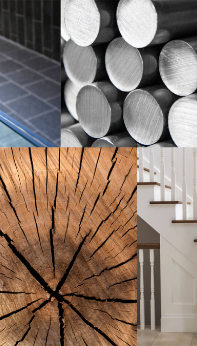

Iron Balustrades: Pros and Cons
Metal balustrades made from wrought iron can be crafted, molded, remolded, and personalized to the homeowner’s specific taste in interior/exterior décor. Wrought iron scrolls and twists go back in history by centuries, as another classic material with a long and rich history of being in use for fencing stairs. Antique wrought iron balustrades, in particular, are extremely popular in large, lavish homes that have the right kind of décor for it. Despite all these aesthetic advantages, wrought iron will rust without regular and careful maintenance. They simply cannot be compared with their metallic alloys, aka stainless steel, in terms of strength or durability.
Metal balustrades made from wrought iron can be crafted, molded, remolded, and personalized to the homeowner’s specific taste in interior/exterior décor. Wrought iron scrolls and twists go back in history by centuries, as another classic material with a long and rich history of being in use for fencing stairs. Antique wrought iron balustrades, in particular, are extremely popular in large, lavish homes that have the right kind of décor for it. Despite all these aesthetic advantages, wrought iron will rust without regular and careful maintenance. They simply cannot be compared with their metallic alloys, aka stainless steel, in terms of strength or durability.
Glass Balustrades: Pros and Cons
Glass balustrades are always beautiful because of the clarity that they provide. Although transparent glass fencing looks amazing, translucency is perhaps better for most homes since transparent glass will almost inevitably pick up smudges, handprints, and dust in no time at all. On the other hand, translucent glass balustrades have a rougher, matte-like texture to them, which will make it easier to maintain the fencing without constant wiping daily! When combined with stainless-steel for reinforcement, there is likely no downside to glass made staircase fencing. Keep in mind that even without the metallic support, toughened glass can be sturdier than wrought iron all on its own too. Glass does not rot or rust, and a pest infestation is not a possibility here. Microbes do not mind living on glass, though, so you will still need to clean and disinfect your glass balustrades regularly to keep germs from accumulating on the glass surface. For those that are wondering why aluminium was not mentioned, then that is largely because it is a very poor choice for this particular structure. Even though it is cheap and customizable, aluminium is soft, highly susceptible to corrosion, and it just does not do much for aesthetics either. As already mentioned, balustrades are more than just about décor, given that they also provide safety. Choosing aluminium fencing just cannot be considered a cost-efficient option for that very reason. Even if you do go for aluminium balustrades, do make sure that it’s not outside, or the weather in Perth will make you regret your decision much faster than you might imagine!
Glass balustrades are always beautiful because of the clarity that they provide. Although transparent glass fencing looks amazing, translucency is perhaps better for most homes since transparent glass will almost inevitably pick up smudges, handprints, and dust in no time at all. On the other hand, translucent glass balustrades have a rougher, matte-like texture to them, which will make it easier to maintain the fencing without constant wiping daily! When combined with stainless-steel for reinforcement, there is likely no downside to glass made staircase fencing. Keep in mind that even without the metallic support, toughened glass can be sturdier than wrought iron all on its own too. Glass does not rot or rust, and a pest infestation is not a possibility here. Microbes do not mind living on glass, though, so you will still need to clean and disinfect your glass balustrades regularly to keep germs from accumulating on the glass surface. For those that are wondering why aluminium was not mentioned, then that is largely because it is a very poor choice for this particular structure. Even though it is cheap and customizable, aluminium is soft, highly susceptible to corrosion, and it just does not do much for aesthetics either. As already mentioned, balustrades are more than just about décor, given that they also provide safety. Choosing aluminium fencing just cannot be considered a cost-efficient option for that very reason. Even if you do go for aluminium balustrades, do make sure that it’s not outside, or the weather in Perth will make you regret your decision much faster than you might imagine!

Main considerations when choosing the material for your staircase:
Aesthetics of your home
Available finishes
Durable material
Cleaning and maintenance
Cost
Choose wood if:
…you want to take advantage of the rich colours and tones that different types of wood can offer. Wood can be used to create both contemporary and traditional finishes. In Victorian or Edwardian properties, where you can want to retain a period aesthetic, wood balustrades are your best choice. If you want to paint your staircase then go for a white primed wood. Choose glass if:
…you like a contemporary, minimalist feel or want to create more light in your property. Glass balustrades can radically change the feel of an open-plan room, making it feel less cluttered. Glass is very easy to clean and requires little to no ongoing maintenance. Robust safety glass is always used. Glass panels can look fantastic with wooden hand or base rails and metal brackets. Choose metal if:
…you like a striking contrast between contemporary and traditional, or an industrial look. Metal stair parts can be used in combination with both wood and glass. Metal can also add a modern, industrial look to a traditional looking staircase.
Aesthetics of your home
Available finishes
Durable material
Cleaning and maintenance
Cost
Choose wood if:
…you want to take advantage of the rich colours and tones that different types of wood can offer. Wood can be used to create both contemporary and traditional finishes. In Victorian or Edwardian properties, where you can want to retain a period aesthetic, wood balustrades are your best choice. If you want to paint your staircase then go for a white primed wood. Choose glass if:
…you like a contemporary, minimalist feel or want to create more light in your property. Glass balustrades can radically change the feel of an open-plan room, making it feel less cluttered. Glass is very easy to clean and requires little to no ongoing maintenance. Robust safety glass is always used. Glass panels can look fantastic with wooden hand or base rails and metal brackets. Choose metal if:
…you like a striking contrast between contemporary and traditional, or an industrial look. Metal stair parts can be used in combination with both wood and glass. Metal can also add a modern, industrial look to a traditional looking staircase.
Wood Balustrades: Pros and Cons
The main advantage of wood or timber is the visual appeal, and there’s no beating the classic, sophisticated, and rich look of high-quality timber balustrades. Being wood, they also come in many shapes and sizes, with customizability options, if you wish to personalize your staircase fencing truly. Unfortunately, wood balustrades also come with some innate issues that are inherent in all wood made products. Although adequately cured and sealed timber can last for a long time, it will not last as long as metal balustrade fencings would. Even hardwood is susceptible to water damage, rot, termites, pest infestations, expansions, and contractions. Given that people’s lives may depend on handrails, especially if you have children or seniors at home, wood may not always be the best option for fencing your stairs.
The main advantage of wood or timber is the visual appeal, and there’s no beating the classic, sophisticated, and rich look of high-quality timber balustrades. Being wood, they also come in many shapes and sizes, with customizability options, if you wish to personalize your staircase fencing truly. Unfortunately, wood balustrades also come with some innate issues that are inherent in all wood made products. Although adequately cured and sealed timber can last for a long time, it will not last as long as metal balustrade fencings would. Even hardwood is susceptible to water damage, rot, termites, pest infestations, expansions, and contractions. Given that people’s lives may depend on handrails, especially if you have children or seniors at home, wood may not always be the best option for fencing your stairs.